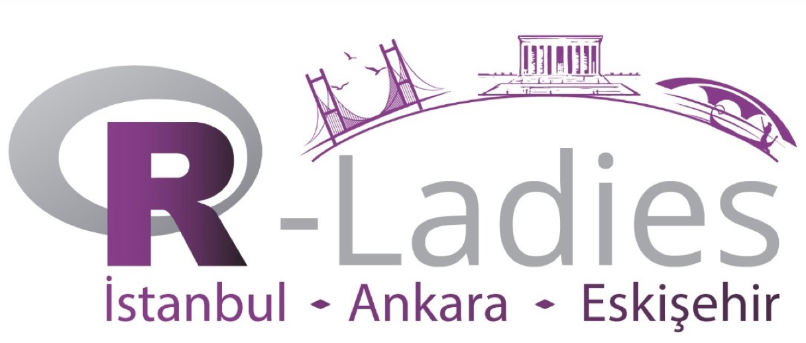

class: right, top, title-slide # <br /> Webinar 4 ### 12/06/2020 --- <img src="aim.png" width="50%" /> -- - R-Ladies, R topluluğunda cinsiyet çeşitliliğini desteklemek için kurulmuş dünya çapında bir organizasyondur. -- - R kullanan ve geliştiren kadınlarla bir iletişim ortamı sağlamak -- - Kadınları R kodları yazmaya, paket geliştirmeye ve R konferanslarına konuşmacı olarak katılmaya teşvik etmek --- -- <img src="global.png" width="50%" style="display: block; margin: auto;" /> -- <img src="slide3.png" width="60%" style="display: block; margin: auto;" /> --- R-Ladies Global -- <img src="slide4.png" width="50%" style="display: block; margin: auto;" /> -- R-Ladies Türkiye ↠ --- background-position: 150% 50% class: center, bottom, inverse <img src="slide5.png" width="90%" style="display: block; margin: auto;" /> -- İstanbul, Eylül 2016 -- Ankara, Haziran 2019 -- Eskişehir, Ekim 2019 --- <img src="kurucular.png" width="70%" style="display: block; margin: auto;" /> -- <img src="slide6ek-ladies.png" width="70%" style="display: block; margin: auto;" /> -- <img src="etkinlik5.png" width="50%" style="display: block; margin: auto;" /> --- <img src="slide7.png" width="70%" style="display: block; margin: auto;" /> -- layout: false .left-column[ <img src="twitter.png" width="10%" style="display: block; margin: auto auto auto 0;" /> https:/twitter.com/RLadiesEskisehR https:/twitter.com/RLadiesIstanbul https:/twitter.com/RLadiesIstanbul ] --- <img src="slide7.png" width="70%" style="display: block; margin: auto;" /> .left-column[ <img src="meetup.png" width="10%" style="display: block; margin: auto auto auto 0;" /> https://www.meetup.com/rladies-eskisehir https://https:/meetup.com/rladies-ankara https://https:/meetup.com/rladies-istanbul ] --- <img src="slide7.png" width="70%" style="display: block; margin: auto;" /> .left-column[ <img src="insta.png" width="10%" style="display: block; margin: auto auto auto 0;" /> https://www.instagram.com/rladies-ankara ] --- <img src="youtube.png" width="30%" style="display: block; margin: auto;" /> Webinar 1: https://youtu.be/A-zCgrfDavI <img src="kayit1.png" width="15%" style="display: block; margin: auto auto auto 0;" /> Webinar 2: https://youtube.com/watch?v=uCzPwMknOxQ <img src="kayit2.png" width="15%" style="display: block; margin: auto auto auto 0;" /> Webinar 3: <img src="kayit3.png" width="15%" style="display: block; margin: auto auto auto 0;" /> --- <img src="thk.png" width="80%" style="display: block; margin: auto;" /> `* Slaytlar için R paketi [**xaringan**](https://github.com/yihui/xaringan) ile [**knitr**](http://yihui.name/knitr) ve [R Markdown](https://rmarkdown.rstudio.com) kullanılmıştır.` --- <img src="slide8.png" width="70%" style="display: block; margin: auto;" />